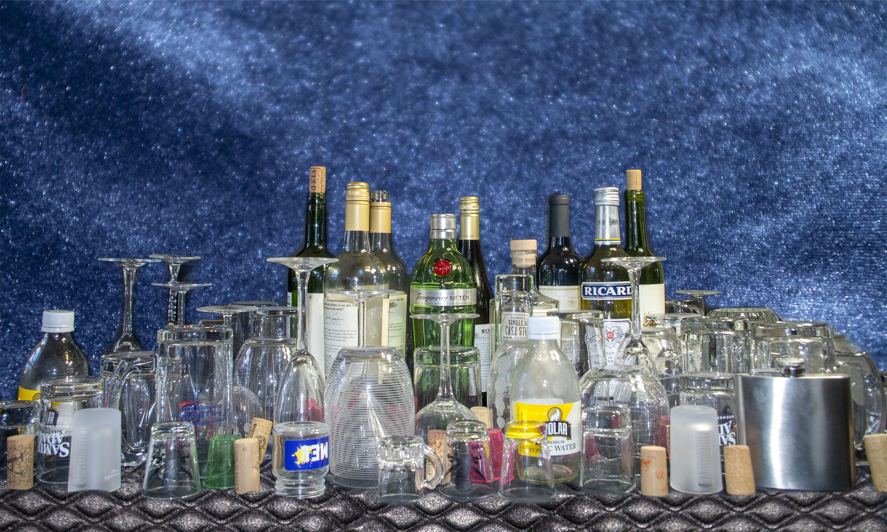

Along the coast of Downstairs is a narrow country called The Cabinet of Liquor. The capital of this city is Wine Cellar, but people mainly visit to see the Glass City. This is a wild city full of both celebration and sorrow. On weekends, the city floods with tourists who come for wild nights full of laughter, movies, and games. Sometimes they leave with fantastic memories and good times. Other times they leave with headaches and regret. It’s an excellent place to host birthdays, bachelor parties, and celebrations of all sorts.